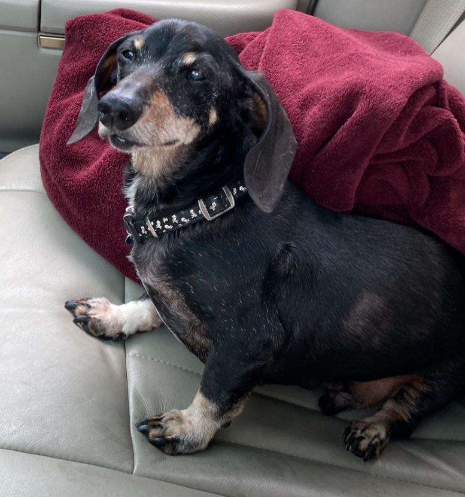

Hey everybody! My name is Andrew. You can feel free to call me either Andrew or Drew, but never Andy.
I repeat NEVER Andy haha.
I am currently 35 years old and grew up in a tiny terrible town called Fredericktown. Don't look it up, I
promise you it's not worth the effort,
but I'll give you just a small fun fact about it. For several years it was considered the poorest city in
Missouri! Currently I
reside in west STL county with my partner of 10 years, Jared, and our cat Henry. We lost our miniature
dachshund last year. His name was Vincent, named
after the main villain in the Cowboy Bebop Movie from
2001, and he was 19 years old and just the absolute
best little guy.
Jared and I
Henry

Vincent
Current career and future goals!
I currently work as a Office Coordinator for a furniture company that has been around since 1885, and I have
been there for roughly 3 years now.
Before that I was a manager for Gamestop for about 6 years. Seems like it would be super cool, well it
wasn't but at least I got a whole lot of free
stuff before I left. I really want to break into the tech industry though, I would love to get out of a
retail setting and into something that I can
actually put my passion for computer and tech to use. I not entirely sure where in the industry I really
want to end up but as long as I can get my foot
in the door I can always find that out as I grow and learn. As it stands I have been learning to code as a
hobby for a little over 2 years, getting exposure
into several different languages and frameworks, and built several small projects through different courses
and tutorials. Some are obviously better than others
but I am proud of each of them as they show me that I am learning and I can in fact do this.
Check out my resume and portfolio!
My hobbies!
I have many hobbies, sometimes it feels like I have too many but who can actually say?! I am a huge
gamer, from video games, boardgames, to table top games like D&D I
enjoy them all. My favorite video games include:
Any of the Legend of Zelda series
Any of the soulsborne titles but in order
Bloodborne
Elden Ring
Dark Souls 3
Stardew Valley ~ I play on console so I am still waiting on that 1.6 update ARG!
I have a very large collection of boardgames as well! Feel free to check the collection. A
large
chunk of
which are actually first prings or singular runs that never made it to retail. These of course are some of
my
most prized
games.
I am a big music guy and almost have music going. Last year I broke my listening time record with 41,694
minutes for the year.
I could have had more, but I have to sleep sometime you know? In addition to just listening, I also picked
up
bass during the
pandemic. I played drums as a teenager but living in an apartment its kind of hard getting away with having
a
drum kit.
Most recently I have started 3D printing and sculpting. Its definitely been an interesting learning
experience.
I immediately
messed the nozzle up and had to tear it down and fix it, but I am now confident that I could fix most issues
with it.